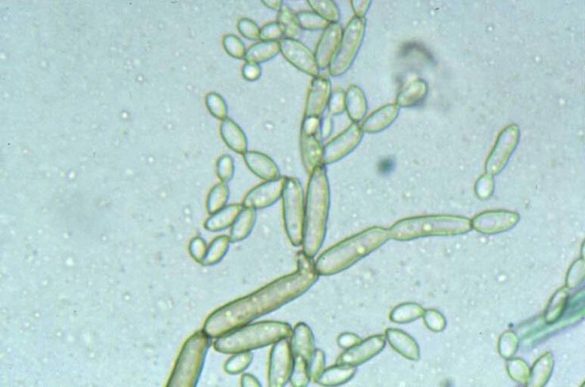
 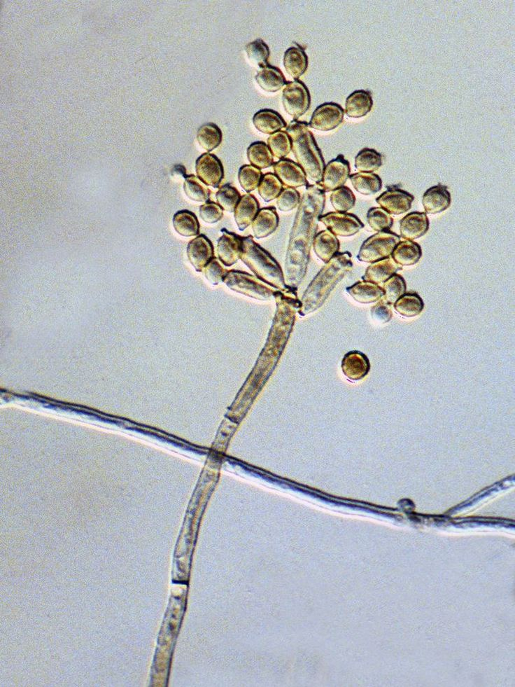
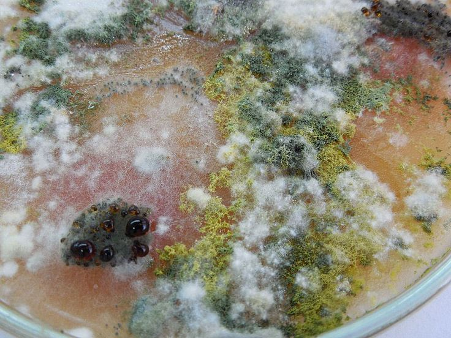
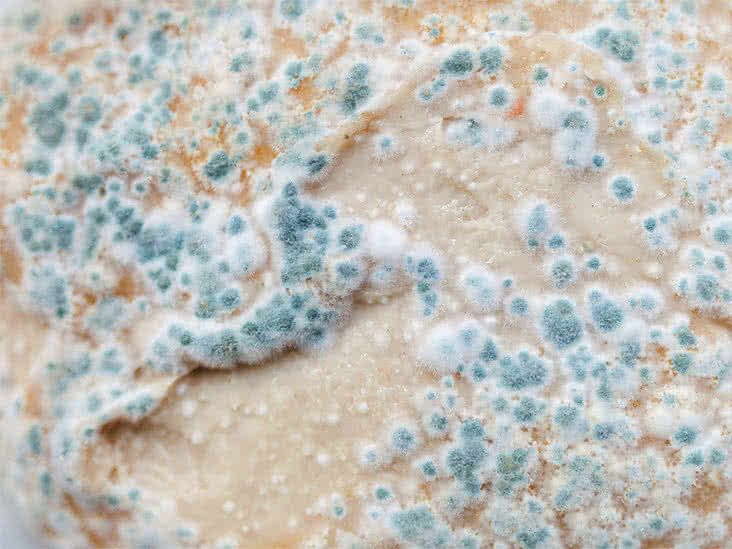
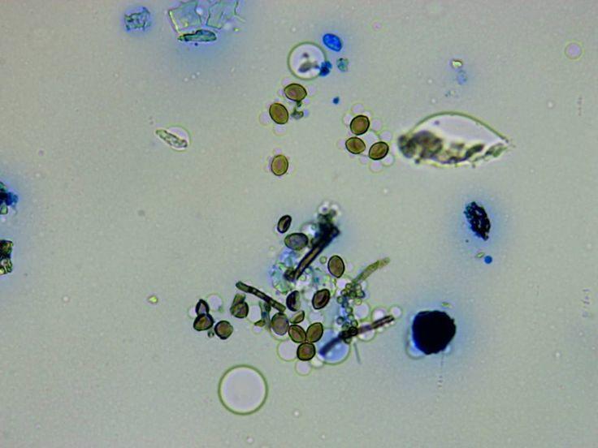
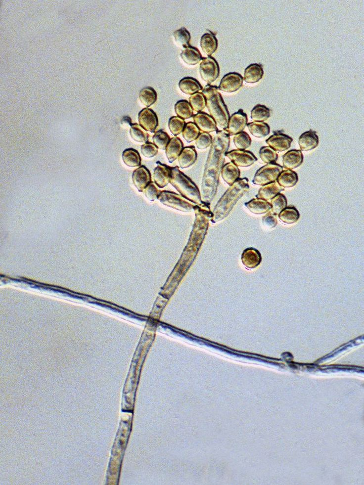
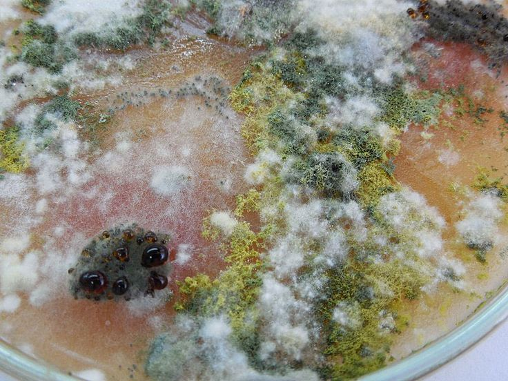
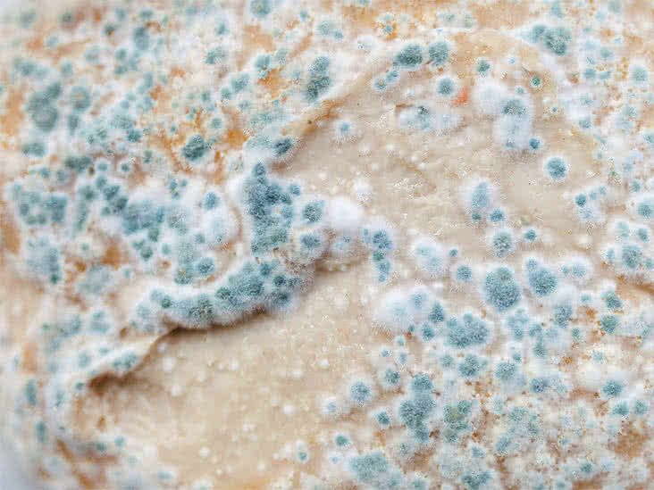
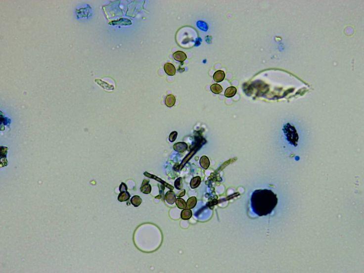
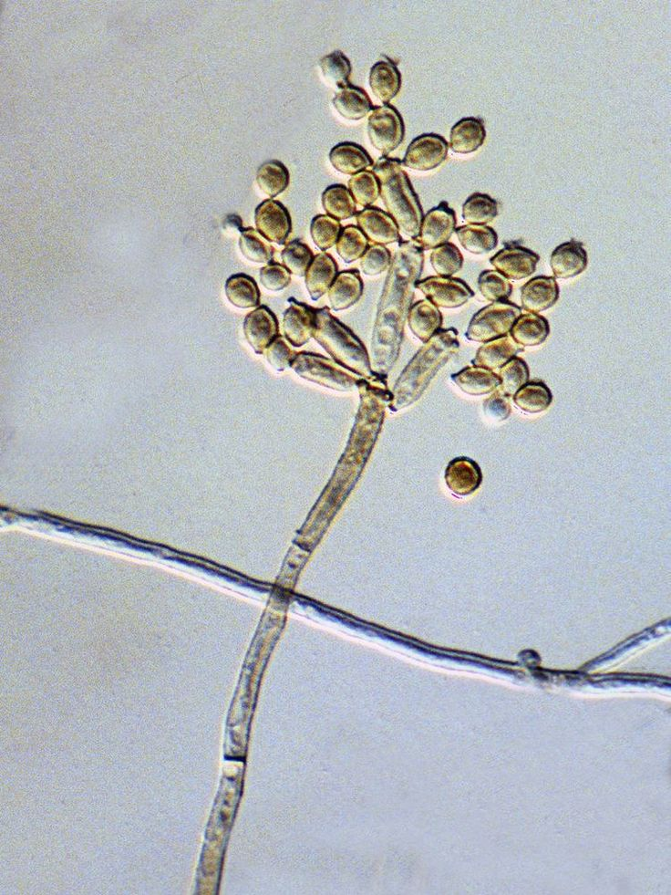
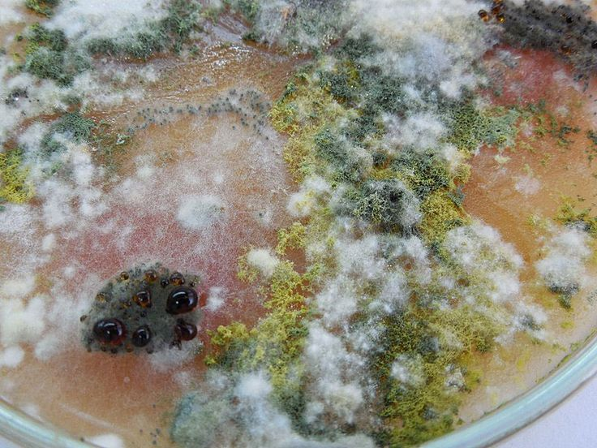
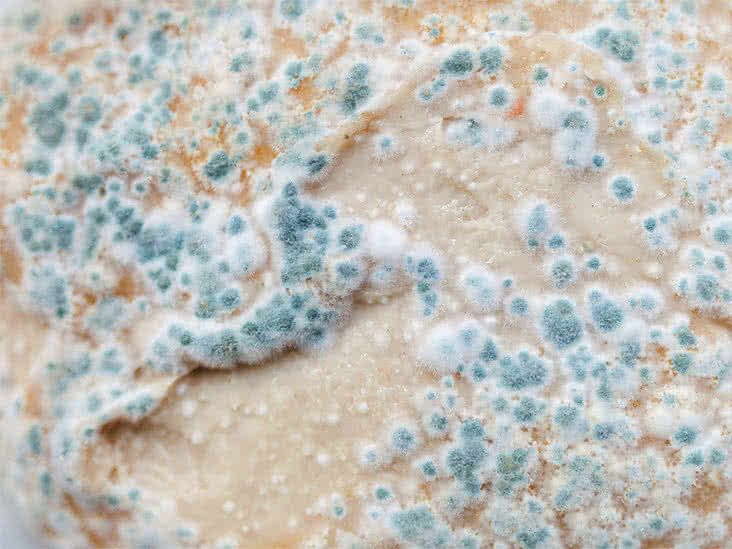
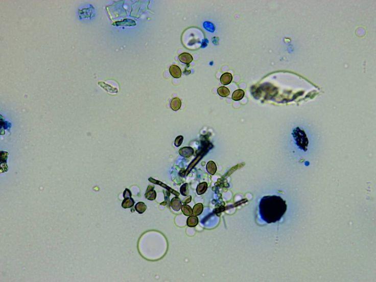
“나는.. 물$~기만 있-”으면, 어’%디서_든 퍼++\지는 바@닥의 축축한 {은밀}한 정&착자.”
(클릭하여 음성 듣기)
| 학명 | Cladosporium |
| 주요 특징 | 고온다습한 환경에서 번식 |
| 감염 경로 | 발/피부질환 유발맨발 접촉 → 피부 침투 |
| 위험성 | 중간 (무좀, 알레르기, 호흡기 질환) |
| 예방법 | 물기 제거, 바닥청소, 슬리퍼 착용 |
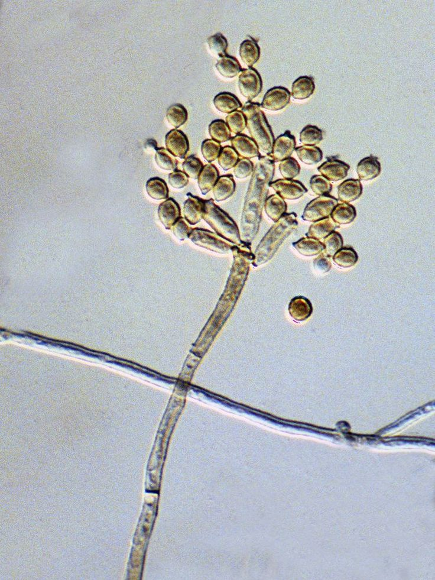
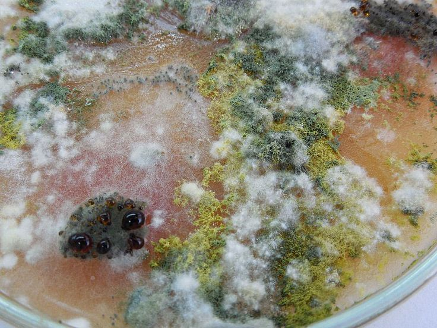
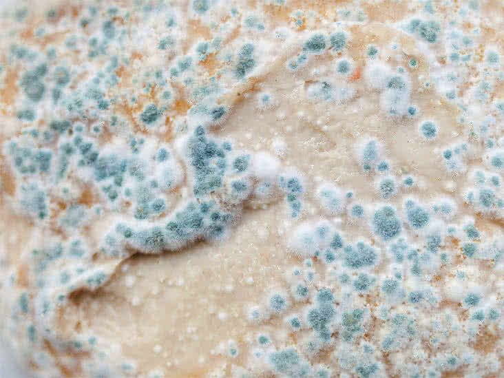
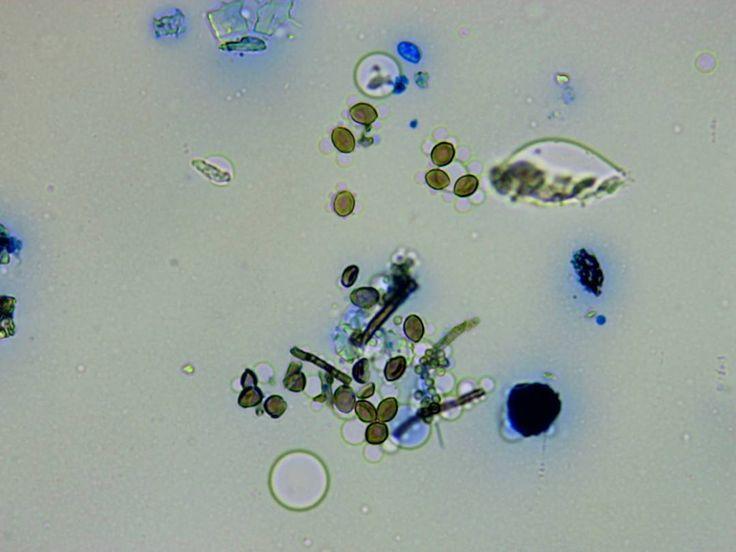